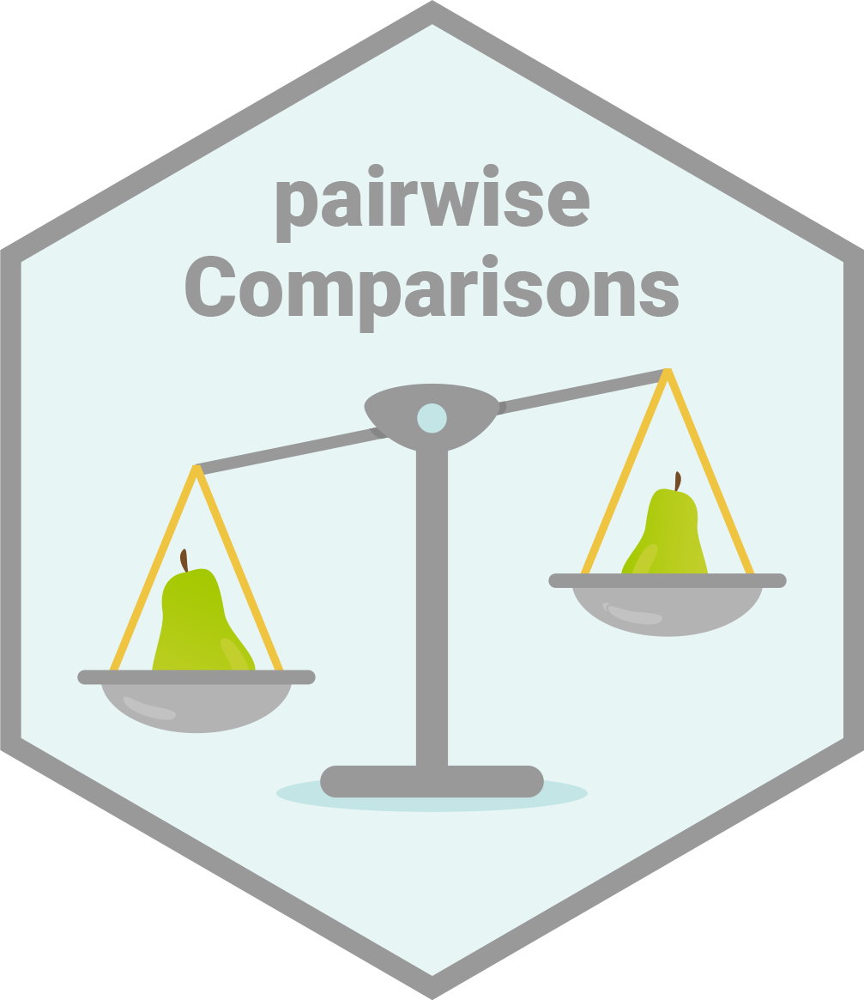
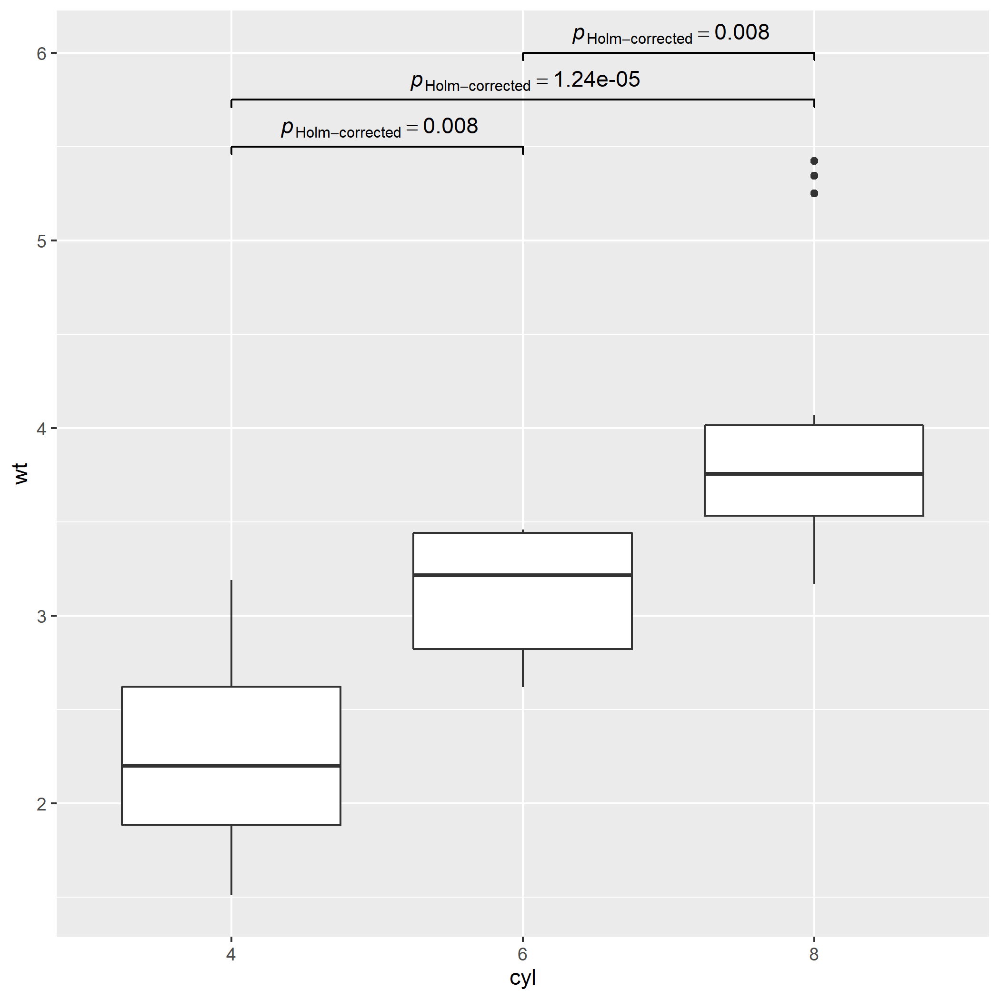
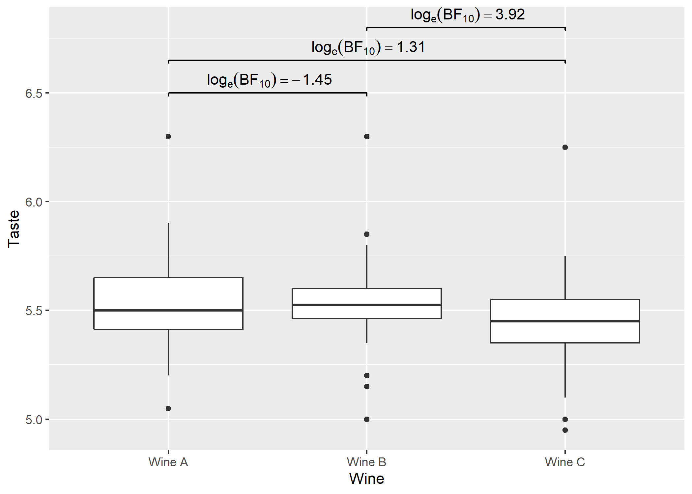

Introduction 
pairwiseComparisons provides a tidy data friendly way to carry out pairwise comparison tests.
It currently supports post hoc multiple pairwise comparisons tests for both between-subjects and within-subjects one-way analysis of variance designs. For both of these designs, parametric, non-parametric, robust, and Bayes Factor statistical tests are available.
Installation
To get the latest, stable CRAN release:
install.packages("pairwiseComparisons")You can get the development version of the package from GitHub. To see what new changes (and bug fixes) have been made to the package since the last release on CRAN, you can check the detailed log of changes here: https://indrajeetpatil.github.io/pairwiseComparisons/news/index.html
If you are in hurry and want to reduce the time of installation, prefer-
# needed package to download from GitHub repo
install.packages("remotes")
# downloading the package from GitHub
remotes::install_github(
repo = "IndrajeetPatil/pairwiseComparisons", # package path on GitHub
dependencies = FALSE, # assumes you have already installed needed packages
quick = TRUE # skips docs, demos, and vignettes
)If time is not a constraint-
remotes::install_github(
repo = "IndrajeetPatil/pairwiseComparisons", # package path on GitHub
dependencies = TRUE, # installs packages which pairwiseComparisons depends on
upgrade_dependencies = TRUE # updates any out of date dependencies
)Summary of types of statistical analyses
Following table contains a brief summary of the currently supported pairwise comparison tests-
Between-subjects design
| Type | Equal variance? | Test | p-value adjustment? | Function |
|---|---|---|---|---|
| Parametric | No | Games-Howell test | Yes | stats::pairwise.t.test |
| Parametric | Yes | Student’s t-test | Yes | PMCMRplus::gamesHowellTest |
| Non-parametric | No | Dunn test | Yes | PMCMRplus::kwAllPairsDunnTest |
| Robust | No | Yuen’s trimmed means test | Yes | WRS2::lincon |
| Bayes Factor | NA |
Student’s t-test | NA |
BayesFactor::ttestBF |
Within-subjects design
| Type | Test | p-value adjustment? | Function |
|---|---|---|---|
| Parametric | Student’s t-test | Yes | stats::pairwise.t.test |
| Non-parametric | Durbin-Conover test | Yes | PMCMRplus::durbinAllPairsTest |
| Robust | Yuen’s trimmed means test | Yes | WRS2::rmmcp |
| Bayes Factor | Student’s t-test | NA |
BayesFactor::ttestBF |
Examples
Here we will see specific examples of how to use this function for different types of
- designs (between or within subjects)
- statistics (parametric, non-parametric, robust, Bayes Factor)
- p-value adjustment methods
Between-subjects design
# for reproducibility
set.seed(123)
library(pairwiseComparisons)
# parametric
# if `var.equal = TRUE`, then Student's *t*-test will be run
pairwise_comparisons(
data = ggplot2::msleep,
x = vore,
y = brainwt,
type = "parametric",
var.equal = TRUE,
paired = FALSE,
p.adjust.method = "bonferroni"
)
#> # A tibble: 6 x 6
#> group1 group2 p.value test.details p.value.adjustment
#> <chr> <chr> <dbl> <chr> <chr>
#> 1 carni herbi 1 Student's t-test Bonferroni
#> 2 carni insecti 1 Student's t-test Bonferroni
#> 3 carni omni 1 Student's t-test Bonferroni
#> 4 herbi insecti 1 Student's t-test Bonferroni
#> 5 herbi omni 0.979 Student's t-test Bonferroni
#> 6 insecti omni 1 Student's t-test Bonferroni
#> label
#> <chr>
#> 1 list(~italic(p)[Bonferroni-corrected]==1.000)
#> 2 list(~italic(p)[Bonferroni-corrected]==1.000)
#> 3 list(~italic(p)[Bonferroni-corrected]==1.000)
#> 4 list(~italic(p)[Bonferroni-corrected]==1.000)
#> 5 list(~italic(p)[Bonferroni-corrected]==0.979)
#> 6 list(~italic(p)[Bonferroni-corrected]==1.000)
# if `var.equal = FALSE`, then Games-Howell test will be run
pairwise_comparisons(
data = ggplot2::msleep,
x = vore,
y = brainwt,
type = "parametric",
var.equal = FALSE,
paired = FALSE,
p.adjust.method = "bonferroni"
)
#> # A tibble: 6 x 9
#> group1 group2 statistic p.value alternative distribution test.details
#> <chr> <chr> <dbl> <dbl> <chr> <chr> <chr>
#> 1 carni herbi 2.17 1 two.sided q Games-Howell test
#> 2 carni insecti -2.17 1 two.sided q Games-Howell test
#> 3 carni omni 1.10 1 two.sided q Games-Howell test
#> 4 herbi insecti -2.41 1 two.sided q Games-Howell test
#> 5 herbi omni -1.87 1 two.sided q Games-Howell test
#> 6 insecti omni 2.19 1 two.sided q Games-Howell test
#> p.value.adjustment label
#> <chr> <chr>
#> 1 Bonferroni list(~italic(p)[Bonferroni-corrected]==1.000)
#> 2 Bonferroni list(~italic(p)[Bonferroni-corrected]==1.000)
#> 3 Bonferroni list(~italic(p)[Bonferroni-corrected]==1.000)
#> 4 Bonferroni list(~italic(p)[Bonferroni-corrected]==1.000)
#> 5 Bonferroni list(~italic(p)[Bonferroni-corrected]==1.000)
#> 6 Bonferroni list(~italic(p)[Bonferroni-corrected]==1.000)
# non-parametric
pairwise_comparisons(
data = ggplot2::msleep,
x = vore,
y = brainwt,
type = "nonparametric",
paired = FALSE,
p.adjust.method = "none"
)
#> # A tibble: 6 x 9
#> group1 group2 statistic p.value alternative distribution test.details
#> <chr> <chr> <dbl> <dbl> <chr> <chr> <chr>
#> 1 carni herbi 0.582 0.561 two.sided z Dunn test
#> 2 carni insecti 1.88 0.0595 two.sided z Dunn test
#> 3 carni omni 1.14 0.254 two.sided z Dunn test
#> 4 herbi insecti 1.63 0.102 two.sided z Dunn test
#> 5 herbi omni 0.717 0.474 two.sided z Dunn test
#> 6 insecti omni 1.14 0.254 two.sided z Dunn test
#> p.value.adjustment label
#> <chr> <chr>
#> 1 None list(~italic(p)[uncorrected]==0.561)
#> 2 None list(~italic(p)[uncorrected]==0.060)
#> 3 None list(~italic(p)[uncorrected]==0.254)
#> 4 None list(~italic(p)[uncorrected]==0.102)
#> 5 None list(~italic(p)[uncorrected]==0.474)
#> 6 None list(~italic(p)[uncorrected]==0.254)
# robust
pairwise_comparisons(
data = ggplot2::msleep,
x = vore,
y = brainwt,
type = "robust",
paired = FALSE,
p.adjust.method = "fdr"
)
#> # A tibble: 6 x 9
#> group1 group2 estimate conf.low conf.high p.value test.details
#> <chr> <chr> <dbl> <dbl> <dbl> <dbl> <chr>
#> 1 carni herbi -0.0530 -0.274 0.168 0.969 Yuen's trimmed means test
#> 2 carni insecti 0.0577 -0.0609 0.176 0.969 Yuen's trimmed means test
#> 3 carni omni 0.00210 -0.151 0.155 0.969 Yuen's trimmed means test
#> 4 herbi insecti 0.111 -0.0983 0.320 0.969 Yuen's trimmed means test
#> 5 herbi omni 0.0551 -0.173 0.283 0.969 Yuen's trimmed means test
#> 6 insecti omni -0.0556 -0.184 0.0728 0.969 Yuen's trimmed means test
#> p.value.adjustment label
#> <chr> <chr>
#> 1 FDR list(~italic(p)[FDR-corrected]==0.969)
#> 2 FDR list(~italic(p)[FDR-corrected]==0.969)
#> 3 FDR list(~italic(p)[FDR-corrected]==0.969)
#> 4 FDR list(~italic(p)[FDR-corrected]==0.969)
#> 5 FDR list(~italic(p)[FDR-corrected]==0.969)
#> 6 FDR list(~italic(p)[FDR-corrected]==0.969)
# Bayes Factor
pairwise_comparisons(
data = ggplot2::msleep,
x = vore,
y = brainwt,
type = "bayes",
paired = FALSE
)
#> # A tibble: 6 x 15
#> group1 group2 term estimate conf.low conf.high pd rope.percentage
#> <chr> <chr> <chr> <dbl> <dbl> <dbl> <dbl> <dbl>
#> 1 carni herbi Difference 0.376 -0.349 1.15 0.800 0.183
#> 2 carni insecti Difference -0.0339 -0.0990 0.0348 0.812 0.145
#> 3 carni omni Difference 0.0447 -0.100 0.210 0.688 0.229
#> 4 herbi insecti Difference -0.353 -1.38 0.501 0.742 0.190
#> 5 herbi omni Difference -0.364 -0.943 0.197 0.848 0.176
#> 6 insecti omni Difference 0.0766 -0.111 0.276 0.743 0.182
#> prior.distribution prior.location prior.scale bf10 log_e_bf10
#> <chr> <dbl> <dbl> <dbl> <dbl>
#> 1 cauchy 0 0.707 0.540 -0.617
#> 2 cauchy 0 0.707 0.718 -0.332
#> 3 cauchy 0 0.707 0.427 -0.851
#> 4 cauchy 0 0.707 0.540 -0.616
#> 5 cauchy 0 0.707 0.571 -0.560
#> 6 cauchy 0 0.707 0.545 -0.606
#> label test.details
#> <chr> <chr>
#> 1 list(~log[e](BF['01'])==0.62) Student's t-test
#> 2 list(~log[e](BF['01'])==0.33) Student's t-test
#> 3 list(~log[e](BF['01'])==0.85) Student's t-test
#> 4 list(~log[e](BF['01'])==0.62) Student's t-test
#> 5 list(~log[e](BF['01'])==0.56) Student's t-test
#> 6 list(~log[e](BF['01'])==0.61) Student's t-testWithin-subjects design
# for reproducibility
set.seed(123)
# parametric
pairwise_comparisons(
data = bugs_long,
x = condition,
y = desire,
subject.id = subject,
type = "parametric",
paired = TRUE,
p.adjust.method = "BH"
)
#> # A tibble: 6 x 6
#> group1 group2 p.value test.details p.value.adjustment
#> <chr> <chr> <dbl> <chr> <chr>
#> 1 HDHF HDLF 1.06e- 3 Student's t-test FDR
#> 2 HDHF LDHF 7.02e- 2 Student's t-test FDR
#> 3 HDHF LDLF 3.95e-12 Student's t-test FDR
#> 4 HDLF LDHF 6.74e- 2 Student's t-test FDR
#> 5 HDLF LDLF 1.99e- 3 Student's t-test FDR
#> 6 LDHF LDLF 6.66e- 9 Student's t-test FDR
#> label
#> <chr>
#> 1 list(~italic(p)[FDR-corrected]==0.001)
#> 2 list(~italic(p)[FDR-corrected]==0.070)
#> 3 list(~italic(p)[FDR-corrected]==3.95e-12)
#> 4 list(~italic(p)[FDR-corrected]==0.067)
#> 5 list(~italic(p)[FDR-corrected]==0.002)
#> 6 list(~italic(p)[FDR-corrected]==6.66e-09)
# non-parametric
pairwise_comparisons(
data = bugs_long,
x = condition,
y = desire,
subject.id = subject,
type = "nonparametric",
paired = TRUE,
p.adjust.method = "BY"
)
#> # A tibble: 6 x 9
#> group1 group2 statistic p.value alternative distribution test.details
#> <chr> <chr> <dbl> <dbl> <chr> <chr> <chr>
#> 1 HDHF HDLF 4.78 1.44e- 5 two.sided t Durbin-Conover test
#> 2 HDHF LDHF 2.44 4.47e- 2 two.sided t Durbin-Conover test
#> 3 HDHF LDLF 8.01 5.45e-13 two.sided t Durbin-Conover test
#> 4 HDLF LDHF 2.34 4.96e- 2 two.sided t Durbin-Conover test
#> 5 HDLF LDLF 3.23 5.05e- 3 two.sided t Durbin-Conover test
#> 6 LDHF LDLF 5.57 4.64e- 7 two.sided t Durbin-Conover test
#> p.value.adjustment label
#> <chr> <chr>
#> 1 BY list(~italic(p)[BY-corrected]==1.44e-05)
#> 2 BY list(~italic(p)[BY-corrected]==0.045)
#> 3 BY list(~italic(p)[BY-corrected]==5.45e-13)
#> 4 BY list(~italic(p)[BY-corrected]==0.050)
#> 5 BY list(~italic(p)[BY-corrected]==0.005)
#> 6 BY list(~italic(p)[BY-corrected]==4.64e-07)
# robust
pairwise_comparisons(
data = bugs_long,
x = condition,
y = desire,
subject.id = subject,
type = "robust",
paired = TRUE,
p.adjust.method = "hommel"
)
#> # A tibble: 6 x 10
#> group1 group2 estimate conf.low conf.high p.value p.crit
#> <chr> <chr> <dbl> <dbl> <dbl> <dbl> <dbl>
#> 1 HDHF HDLF 1.16 0.318 2.00 1.49e- 3 0.0127
#> 2 HDHF LDHF 0.5 -0.188 1.19 6.20e- 2 0.025
#> 3 HDHF LDLF 2.10 1.37 2.82 1.79e-10 0.00851
#> 4 HDLF LDHF -0.701 -1.71 0.303 6.20e- 2 0.05
#> 5 HDLF LDLF 0.938 0.0694 1.81 1.36e- 2 0.0169
#> 6 LDHF LDLF 1.54 0.810 2.27 1.16e- 6 0.0102
#> test.details p.value.adjustment
#> <chr> <chr>
#> 1 Yuen's trimmed means test Hommel
#> 2 Yuen's trimmed means test Hommel
#> 3 Yuen's trimmed means test Hommel
#> 4 Yuen's trimmed means test Hommel
#> 5 Yuen's trimmed means test Hommel
#> 6 Yuen's trimmed means test Hommel
#> label
#> <chr>
#> 1 list(~italic(p)[Hommel-corrected]==0.001)
#> 2 list(~italic(p)[Hommel-corrected]==0.062)
#> 3 list(~italic(p)[Hommel-corrected]==1.79e-10)
#> 4 list(~italic(p)[Hommel-corrected]==0.062)
#> 5 list(~italic(p)[Hommel-corrected]==0.014)
#> 6 list(~italic(p)[Hommel-corrected]==1.16e-06)
# Bayes Factor
pairwise_comparisons(
data = bugs_long,
x = condition,
y = desire,
subject.id = subject,
type = "bayes",
paired = TRUE,
bf.prior = 0.77
)
#> # A tibble: 6 x 15
#> group1 group2 term estimate conf.low conf.high pd rope.percentage
#> <chr> <chr> <chr> <dbl> <dbl> <dbl> <dbl> <dbl>
#> 1 HDHF HDLF Difference -1.10 -1.62 -0.621 1 0
#> 2 HDHF LDHF Difference -0.453 -0.868 -0.0337 0.954 0.166
#> 3 HDHF LDLF Difference -2.13 -2.53 -1.70 1 0
#> 4 HDLF LDHF Difference 0.653 0.0889 1.19 0.968 0.144
#> 5 HDLF LDLF Difference -0.980 -1.49 -0.471 0.999 0
#> 6 LDHF LDLF Difference -1.66 -2.09 -1.26 1 0
#> prior.distribution prior.location prior.scale bf10 log_e_bf10
#> <chr> <dbl> <dbl> <dbl> <dbl>
#> 1 cauchy 0 0.77 3.95e+ 1 3.68
#> 2 cauchy 0 0.77 5.42e- 1 -0.612
#> 3 cauchy 0 0.77 1.22e+10 23.2
#> 4 cauchy 0 0.77 6.50e- 1 -0.430
#> 5 cauchy 0 0.77 1.72e+ 1 2.84
#> 6 cauchy 0 0.77 4.78e+ 6 15.4
#> label test.details
#> <chr> <chr>
#> 1 list(~log[e](BF['01'])==-3.68) Student's t-test
#> 2 list(~log[e](BF['01'])==0.61) Student's t-test
#> 3 list(~log[e](BF['01'])==-23.22) Student's t-test
#> 4 list(~log[e](BF['01'])==0.43) Student's t-test
#> 5 list(~log[e](BF['01'])==-2.84) Student's t-test
#> 6 list(~log[e](BF['01'])==-15.38) Student's t-test
Using pairwiseComparisons with ggsignif
Example-1: between-subjects
# needed libraries
set.seed(123)
library(ggplot2)
library(pairwiseComparisons)
library(ggsignif)
# converting to factor
mtcars$cyl <- as.factor(mtcars$cyl)
# creating a basic plot
p <- ggplot(mtcars, aes(cyl, wt)) +
geom_boxplot()
# using `pairwiseComparisons` package to create a dataframe with results
set.seed(123)
(df <-
pairwise_comparisons(mtcars, cyl, wt) %>%
dplyr::mutate(.data = ., groups = purrr::pmap(.l = list(group1, group2), .f = c)) %>%
dplyr::arrange(.data = ., group1))
#> # A tibble: 3 x 10
#> group1 group2 statistic p.value alternative distribution test.details
#> <chr> <chr> <dbl> <dbl> <chr> <chr> <chr>
#> 1 4 6 5.39 0.00831 two.sided q Games-Howell test
#> 2 4 8 9.11 0.0000124 two.sided q Games-Howell test
#> 3 6 8 5.12 0.00831 two.sided q Games-Howell test
#> p.value.adjustment label groups
#> <chr> <chr> <list>
#> 1 Holm list(~italic(p)[Holm-corrected]==0.008) <chr [2]>
#> 2 Holm list(~italic(p)[Holm-corrected]==1.24e-05) <chr [2]>
#> 3 Holm list(~italic(p)[Holm-corrected]==0.008) <chr [2]>
# using `geom_signif` to display results
# (note that you can choose not to display all comparisons)
p +
ggsignif::geom_signif(
comparisons = list(df$groups[[1]]),
annotations = df$label[[1]],
test = NULL,
na.rm = TRUE,
parse = TRUE
)
Example-2: within-subjects
# needed libraries
library(ggplot2)
library(pairwiseComparisons)
library(ggsignif)
# creating a basic plot
p <- ggplot(WRS2::WineTasting, aes(Wine, Taste)) +
geom_boxplot()
# using `pairwiseComparisons` package to create a dataframe with results
set.seed(123)
(df <-
pairwise_comparisons(
WRS2::WineTasting,
Wine,
Taste,
subject.id = Taster,
type = "bayes",
paired = TRUE
) %>%
dplyr::mutate(.data = ., groups = purrr::pmap(.l = list(group1, group2), .f = c)) %>%
dplyr::arrange(.data = ., group1))
#> # A tibble: 3 x 16
#> group1 group2 term estimate conf.low conf.high pd rope.percentage
#> <chr> <chr> <chr> <dbl> <dbl> <dbl> <dbl> <dbl>
#> 1 Wine A Wine B Difference -0.00721 -0.0473 0.0307 0.624 0.431
#> 2 Wine A Wine C Difference -0.0755 -0.127 -0.0242 0.990 0
#> 3 Wine B Wine C Difference -0.0693 -0.102 -0.0390 1.00 0
#> prior.distribution prior.location prior.scale bf10 log_e_bf10
#> <chr> <dbl> <dbl> <dbl> <dbl>
#> 1 cauchy 0 0.707 0.235 -1.45
#> 2 cauchy 0 0.707 3.71 1.31
#> 3 cauchy 0 0.707 50.5 3.92
#> label test.details groups
#> <chr> <chr> <list>
#> 1 list(~log[e](BF['01'])==1.45) Student's t-test <chr [2]>
#> 2 list(~log[e](BF['01'])==-1.31) Student's t-test <chr [2]>
#> 3 list(~log[e](BF['01'])==-3.92) Student's t-test <chr [2]>
# using `geom_signif` to display results
p +
ggsignif::geom_signif(
comparisons = df$groups,
map_signif_level = TRUE,
tip_length = 0.01,
y_position = c(6.5, 6.65, 6.8),
annotations = df$label,
test = NULL,
na.rm = TRUE,
parse = TRUE
)
Acknowledgments
The hexsticker was generously designed by Sarah Otterstetter (Max Planck Institute for Human Development, Berlin).
Contributing
I’m happy to receive bug reports, suggestions, questions, and (most of all) contributions to fix problems and add features. I personally prefer using the GitHub issues system over trying to reach out to me in other ways (personal e-mail, Twitter, etc.). Pull Requests for contributions are encouraged.
Here are some simple ways in which you can contribute (in the increasing order of commitment):
Read and correct any inconsistencies in the documentation
Raise issues about bugs or wanted features
Review code
Add new functionality
Please note that this project is released with a Contributor Code of Conduct. By participating in this project you agree to abide by its terms.